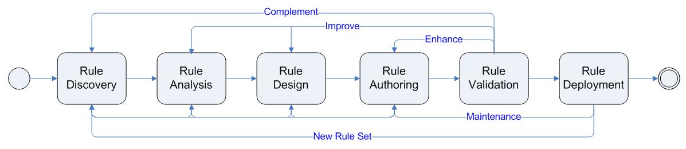
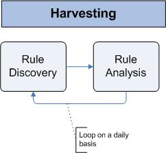
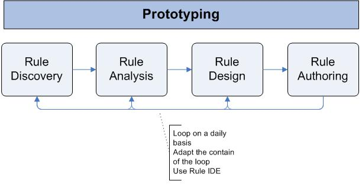
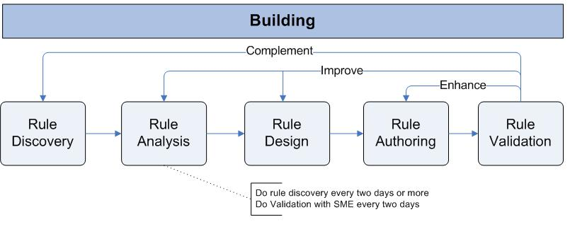
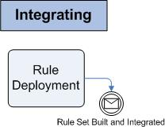
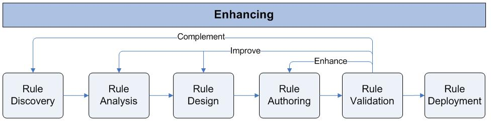

| Concept: Cycle Approach to Rules Development |
|
The Agile Business Rule Development (ABRD) Methodology provides a framework that project teams may adapt to meet the
needs of their specific business rules application project. The methodology supports the full rule lifecycle, from
discovery to governance by using an 'agile', iterative approach. ABRD activities fall into five categories described
below. Each of these activities is executed multiple times as the process is followed.
Like all agile methodologies, in ABRD rules as other software element are developed incrementally, in multiple
iterations of short time frames. However, in ABRD, the entire process lifecycle may not be followed for each iteration.
Instead, a number of very short cycles between phases may occur, with the entire rule set gradually evolving. The
entire process may be represented by the process flow diagram below: 
A typical ABRD ProjectFrom a project management perspective, there are five phases, or activities of project, each of which maps onto parts of the technical process flow described above. The project phases are:
Cycle 1- HarvestingRule harvesting, consisting of the Discovery & Analysis tasks, involves gathering together all the sources of knowledge available to the team. These sources may include a business process description, subject matter experts, policy manuals or other sources of rules. The goal of this activity is to understand the Domain Object Model within the scope of the application and to identify enough rule patterns to begin implementation of rules in the next phase.
During this activity, the development teams divide the day into two parts, executing discovery workshops in the morning
(in 2 or 3-hour sessions), then performing analysis and documentation for the remainder of the day. The team iterates
on these two steps during 2 to 5 days maximum, depending on the number of rules and their complexity 
The prototyping activity extends the tasks performed to include rule authoring. When a workable number of rules (this number will vary by project) have been harvested the development team should start to define the structure of the rule project: the rule set parameters (input-output business objects), and the basic sequencing of the rules (the ruleflow), and the major elements of the Business Object Model. The team should then be able to already implement some rules. Tip: During the first pass through the prototyping activity, it is better to err on the side of too few rules
A best practice is to execute the step "Rule Authoring" as soon as possible to uncover possible analysis and design
issues. Indeed, most of the rules look good on paper but real issues arise most of the time during implementation and
test. The next morning workshop session communicates the issues back to the business team. This leverages the feedback
loop approach and provides an efficient mechanism to build a pragmatic, adequate and business-relevant executable rule
set.  Cycle 3- Building The goal of the build activity is to create rules that can be 'seen', 'used' and, most importantly, tested, by business users. Rules that can be executed by the rule engine are more valuable than ones defined on paper or in abstract forms. This fully endorses the agile statement: "Working software over comprehensive documentation."
The second goal of this phase is to create a set of realistic test scenarios, using real data if possible, to test the
rules created during the Authoring activity. This is a form of Test Driven Development (TDD). This activity extends the
Build activity by adding a Rule Validation task.  The day-to-day authoring activities consist of a series of small steps that include:
The build activity consists of all the previous tasks, with short iterations:
The Building activity should take between two and three weeks, and the output artifacts should be a ruleset that can be loaded into the rule engine and executed.
Depending on the size of the ruleset, this activity may deliver less than 40% of the rules. In that case, this activity
may have to be repeated. In this situation, it is recommended that the activity be time-boxed to three weeks so that a
concrete build may be delivered to the QA or validation team for review. Once a build is delivered, another iteration
of this cycle may be started. At the end of this cycle it is possible to release the rule set integrated as a decision service into the core business application. The development team can then execute functional test on it.
Cycle 4- Integrating
The
goal of this cycle is to deploy the rule set under construction to the execution server in order to test it with an
end-to-end scenario. The integration of the decision service and the domain object model is an important task.
Integration involves the marshaling of data to/from external data sources, such as Database, MOM, files or sockets
into a form that can be understood by the execution engine. This is a 'mapping' of the data received by the decision
service to the Business Object Model created in previous activities.  Cycle 5- Enhancing Cycle 5 is used during the development phase as well as during the rule maintenance or governance activity. One of the goal here is to empower business users or at least business analysts to author and test the rules.
The Enhancing cycle is a transition phase in which last minute changes can be made involving some short, face to face
discovery meetings with SMEs (Subject Matter Experts) to wrap up any outstanding issues or questions before entering
the Governance activity. The Governance activity is an open-ended, long running process to enhance and maintain the
rules created in previous activities. A governance process will vary by organization and is a fundamentally different
process, usually performed by a different team than the rule development team. This team is more business oriented and,
as owners of the rules and business policies, they can develop at their own pace, using the infrastructure put in place
by the development team.  It is important to note that there will almost certainly be some need to enhance the object model or physical data model to add some new facts, attributes, or entities. These modifications will follow the standard release management process of the core business application. Summary ABRD has many advantages as a framework for the business rule development process. It involves all the key stakeholders, provides a proven development process and a clear transition to business analysts to start the governance activities . As a business application using a rule engine is, per design, very agile and supportive of changes, all parts of the organization need to be brought together, such as business analysts, software architects and software developers to gain an understanding early in the development process how the components exposed to the rule engine work together, how to change, add, remove rules, how to deploy them In parallel of these Rule Set development activities the software architect develops the Decision Services integrated into the core business application. Each of these decision services executes one or more rule sets. |
This program and the accompanying materials are made available under the |